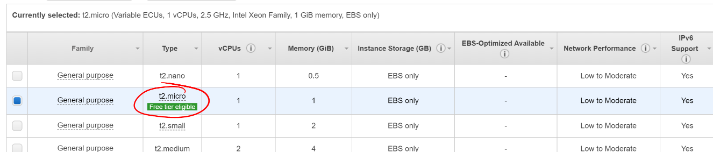

Studio: AWS Devops Basics
Overview
Your goal is to deploy a Spring Boot project to a remote server and verify its execution. This will establish the basics for working in a cloud environment.
Set Up Project
- Build the Airwaze Studio project, or check out the
elasticsearch-starterbranch. -
Change
src/main/resources/import.sqlto:COPY route(src, src_id, dst, dst_id, airline, route_geom) from '/home/airwaze/routes.csv' DELIMITER ',' CSV HEADER; COPY airport(airport_id, name, city, country, faa_code, icao, altitude, time_zone, airport_lat_long) from '/home/airwaze/Airports.csv' DELIMITER ',' CSV HEADER; - Go into IntelliJ's Gradle tool window, and click on
Tasks > build > bootRepackage. - Verify the jar appears in
build/libs
Start an Instance on AWS
- Go to the EC2 Dashboard:
- Click on
Servicesin the page header. - Locate and click on
EC2under Compute.
- Click on

- On the EC2 Dashboard
- Locate and click the
Instanceslink in the sidebar
- Locate and click the

- On the Instances screen
- Locate and click the
Launch Instancebutton at the top of the page
- Locate and click the

Starting an AWS Instance
When creating a new instance, Amazon provides multiple free Amazon Machine Images (AMIs) to choose from. This is a pre-configured operating system installation with multiple tools ready for use. For this exercise, we want to use the Ubuntu Server 16.04 LTS AMI. Locate it in the list of "Quick Start" images and click its Select button.

Next, the console will ask which type of instance to set up. Your choice here defines the amount of virtual CPU cores, RAM, and network perforance you want. This also directly affects the cost of the running instance. Select the t2.micro service, then click "Configure Instance Details".

The following screen allows for configuration of instance. We do not need to customize this image beyond the defaults, so you can continue to "Add Storage".
On this screen, you can choose what storage is available to your instance. AWS will provision a virtual volume in Elastic Block Store to serve as the volume(s) mounted in your instance. By default, it will create an 8 GiB volume to serve as the instance's root volume. The default 8 GiB volume is sufficient for this application. Click on "Add Tags" to progress to the next step.
The "Add Tags" screen is useful for larger enterprise environments, for instance, where ownership and internal billing of instances can be broken down by tags. For this exercise, we do not need any tags, so progress to "Configure Security Group".

Configuring the security groups for your server is critical for protecting your instance from unauthorized remote access. You are liable for the work and costs generated by your instance. An openly-accessible instance can risk your infrastructure security and total costs if it were to be compromised.
- Create a new security group for your instance with a unique name
- Add a useful description for the security group so you know its purpose in the future
- Change the existing rule's source to "My IP"
- This allows remote SSH access to your instance, but only from the IP you're currently using to access AWS
- Continue to "Review and Launch"

This screen gives you a final chance to review and change the settings you chose for this instance. Open the dropdowns on the screen and when you're ready, click "Launch".
This will open a popup on the screen that allows you to configure a key pair for the instance. This will generate the key necessary to SSH into the instance and without this you will not be able to access your instance. In an enterprise environment, there will likely already be multiple key pairs set up that you would use here. For the purpose of this project, create a new key pair:
- Select "Create a new key pair" in the first select box
- Give your key pair a good name, possibly the same name you gave your security group
- Click "Download Key Pair"
- Store this
*.pemfile in a good location and do not lose it - Click "Launch Instances"
AWS will now begin launching your instance. You can click the identifier for your instance to monitor it as it starts up. This will take you back to the Instances dashboard. Take note of your instance's public DNS and IP; you will need this in order to SSH into your instance later.

Set up SSH
- Open the terminal.
- Navigate to your user's ssh configuration folder:
$ cd ~/.ssh - Copy your instance's *.pem file to your .ssh folder:
$ cp /path/to/*.pem . - Change the permissions for this file to read-only by your user:
$ chmod 400 name-of-pem.pem - Using the Public DNS you noted before and your *.pem file, access your AWS instance:
$ ssh -i ~/.ssh/name-of-pem.pem ubuntu@insert-public-DNS-here - The ssh program will likely warn that the authenticity of your host can't be established since it's not seen it before. Respond "yes" to continue connecting. It will add it to the list of known hosts and continue the connection process.
- The remote terminal will appear

Congratulations! You have successfully created and connected to an instance running in the cloud.
Running Your Application In the Cloud
Now that you have a server running in the cloud, you need to use it to do some work. Let's prepare the server to run our application.
First, you don't want the application running under your system account, so we need to create a new user with a password:
$ sudo adduser airwazeNext, from your local machine, upload the Airwaze Studio jar to the server. We'll use scp to securely transmit the file to our server.
$ scp -i ~/.ssh/name-of-pem.pem /path/to/local/app.jar ubuntu@ec2-public-dns.us-east-2.compute.amazonaws.com:/home/ubuntu/app.jar
$ scp -i ~/.ssh/name-of-pem.pem /path/to/local/routes.csv ubuntu@ec2-public-dns.us-east-2.compute.amazonaws.com:/home/ubuntu/routes.csv
$ scp -i ~/.ssh/name-of-pem.pem /path/to/local/Airports.csv ubuntu@ec2-public-dns.us-east-2.compute.amazonaws.com:/home/ubuntu/Airports.csvNow log in to the server:
$ ssh -i ~/.ssh/name-of-pem.pem ubuntu@ec2-public-dns.us-east-2.compute.amazonaws.comNow, on the server, move the file to the airwaze home directory, and make it owned and executable by that user.
$ sudo apt-get install openjdk-8-jdk
$ sudo mv ~/app.jar /home/airwaze/app.jar
$ sudo mv ~/*.csv /home/airwaze
$ sudo chown -R airwaze:airwaze /home/airwaze
$ sudo chmod 500 /home/airwaze/app.jarBefore trying to start the application, we'll install postgres locally so we can start Airwaze Studio. This is something you would never do in a real cloud instance, but we'll do it just for this demonstration so our app will start.
$ sudo apt-get update
$ sudo apt-get install postgresql postgresql-contrib postgis
$ sudo -u postgres createuser --pwprompt airwaze_app_user # give password `somethingsensible`
$ sudo -u postgres createdb -O airwaze_app_user airwaze
$ sudo vim /etc/postgresql/9.5/main/pg_hba.confWhen the configuration file comes up, you'll see that almost all of the lines are commented out. Towards the bottom you find lines that are not commented out. Press i to get into Insert mode, and change the line with local all all peer to local all all md5. When you're done, press escape to get out of insert mode. Press : to bring up a prompt, then press w (for 'write') and q (for 'quit'), followed by return.
$ sudo /etc/init.d/postgresql restart
$ sudo -u postgres psql airwaze
CREATE EXTENSION postgis;
CREATE EXTENSION postgis_topology;
CREATE EXTENSION fuzzystrmatch;
CREATE EXTENSION postgis_tiger_geocoder;
ALTER USER airwaze_app_user SUPERUSER;Now that the app is on the cloud server and the database is ready, we can set up systemd to run this app as a service.
In order to use systemd, we have to make a script in /etc/systemd/system to tell the service how to run our app.
$ sudo vim /etc/systemd/system/airwaze.servicePress i to start inserting text into the file and paste the following:
[Unit]
Description=Airwaze Studio
After=syslog.target
[Service]
User=airwaze
ExecStart=/usr/bin/java -jar /home/airwaze/app.jar SuccessExitStatus=143
Restart=always
[Install]
WantedBy=multi-user.targetOnce this service definition is in place, set the service to start automatically on boot with systemd using the systemctl utility and also start now:
$ sudo systemctl enable airwaze
$ sudo systemctl start airwazeAnd you can view the logs for the service with journalctl.
$ journalctl -f -u airwaze.serviceNow that your application is running, open up a new port in our Security Group from before to allow for web communications.
- Return to the AWS web console
- Click
Security Groupsin the sidebar

- Select the security group with the name you used before

- Click the
Inboundtab andEditthe inbound traffic list

- Add a new
Custom TCPrule for port 8080 and selectMy IPfor the source
- Click
SaveThis opens up a new port in the Security Group just for your IP. The Airwaze app is set up to listen to port 8080 and communicating with that port from your browser will allow you to communicate with the application. - Open your browser
- Go to your server on port 8080:
If you kept journalctl running from before, you should see the logs progress as your browser communicates with the app.
Congratulations! You now have your own application in the cloud!
Next Steps
Your map is currently showing up on the screen; however, the map is not showing any airports. Troubleshoot the application and figure out why the airports are not showing up. Be sure to use your browser's developer tools.
When you have found the problem, build a new copy of your jar and deploy it on your server.
Bonus Mission
-
Use Environment Variables to dynamically change the port that your application is served on.
- Using the instructions above, deploy another one of your SpringBoot application to AWS. Consider using the LaunchCart Project.